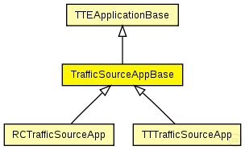

This documentation is released under the Creative Commons license
This documentation is released under the Creative Commons licenseAbstract base traffic source application used for various traffic generators. Uses CTFrame with encapsulated cPacket as payload Since this is an abstract module please do not instantiate it
See also: TTTrafficSourceApp, RCTrafficSourceApp
Author: Till Steinbach
The following diagram shows usage relationships between types. Unresolved types are missing from the diagram. Click here to see the full picture.
The following diagram shows inheritance relationships for this type. Unresolved types are missing from the diagram. Click here to see the full picture.
| Name | Type | Description |
|---|---|---|
| TTEApplicationBase | simple module |
Abstract base application used for various application models. Since this is an abstract module please do not instantiate it |
| Name | Type | Description |
|---|---|---|
| AVBTrafficSourceApp | simple module |
See also: TrafficSourceAppBase |
| RCTrafficSourceApp | simple module |
Traffic source application used for rate-constrained traffic generators. |
| TTTrafficSourceApp | simple module |
Traffic source application used for time-triggered traffic generators. |
| Name | Type | Default value | Description |
|---|---|---|---|
| buffers | string | "" |
Comma seperated list of buffer modules the application is allowed to use |
| buffers_manual | bool | false |
If true, buffer management is not used. Applications use their own methods to locate buffers |
| payload | int | 46Byte |
Size of the payload of the message (size of encapsulated cPacket) that is being generated |
| ct_id | int | -1 |
Critical traffic identifier of the message that is being generated (-1) means don't set ID |
| Name | Value | Description |
|---|---|---|
| class | TTEApplicationBase | |
| display | i=block/source |
| Name | Direction | Size | Description |
|---|---|---|---|
| TTin | input |
Input gate for the incoming time-triggered messages |
|
| RCin | input |
Input gate for the incoming rate-constrained messages |
|
| schedulerIn | input |
Input gate for the incoming SchedulerActionTimeEvent messages |
|
| syncIn | input |
Input gate for the incoming SynchronizationNotification messages |
// // Abstract base traffic source application used for various traffic generators. // Uses CTFrame with encapsulated cPacket as payload // Since this is an abstract module please do not instantiate it // // // @see TTTrafficSourceApp, RCTrafficSourceApp // // @author Till Steinbach simple TrafficSourceAppBase extends TTEApplicationBase { parameters: @display("i=block/source"); //Size of the payload of the message (size of encapsulated cPacket) that is being generated int payload @unit(Byte) = default(46Byte); //Critical traffic identifier of the message that is being generated (-1) means don't set ID int ct_id = default(-1); }
This documentation is released under the Creative Commons license